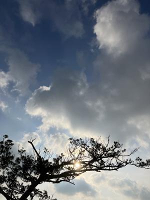
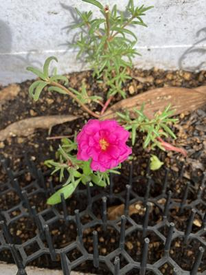

うるがいの話 ある日
最新: 松葉牡丹【うるがいの話 ある日】とは 一日だけのプログです
『うるがいの話』の最新一日だけのプログで、通信料が少なく経済的だ。カニの画像をクリックすると全ての日付が載る『うるがいの話』サイトを表示します
|
|
【うるがいの話】 うるがい(ｳﾙｶﾞｲ urugai)とは、『もずくがに』の名前でとても大きくなります。 |
|---|---|
|
|
【カミマヤーの話】 猫のことを方言でマヤーといいます。カミマヤー（kamimayaa）とは、神の猫のことです。 |
|
【たながぁの音楽】 たながぁ（ﾀﾅｶﾞｰ tanagaa）とは手長えびのことで、何種類かあり大きいのは車 エビぐらいになります。 |

|
【ぶながぁの話】 ぶながぁ(ﾌﾞﾅｶﾞｰ bunagaa)とは、赤い髪の毛、赤い身体、そして身長は１ｍ２０ｃｍ ぐらい、川の蟹を食べているの目撃された。場所は沖縄県国頭郡大宜味村のと ある村僕の隣近所に住んでいる爺さんから、聞いた話です。 |
|
|
【ギーマの話】 ギーマ(giima)とは、山原の里山に咲くスズランに似た、 花を付けます。実は食べられます、 気が付くと口の周りが紫になっています。 |
2024年08月21日 (水）松葉牡丹
16:27

２ヶ月まえにメイクマンで購入したマツバボタン（松葉牡丹）の写真を、撮
りたくてチャンスを待っていたが、やっとこさ撮れた。マツバボタン好きで
もなかったのに、歳をとると好みが変わっていくのである。あ、猫よけもあり
ます、そのままだと野良猫がトイレにするので。

朝、ディスクトップＰＣ１（ウィンドウズ１０）のタスクバーにある天気予
報で、大雨情報を知らされた。うのみにして師匠にも伝えたが、全然アタラ
ン！！！！。ムカ、もう絶対に参考にしないと誓う。
『ヒヤミカチ節の早引き版』のユーチューブ動画に着手、工工四ではて？と
いきづまる。小乗版チャネル（古典版）は、徐々にチャネル登録数が増えて
２７、当初の大乗版チャネル（なんでもあり）の３０を超えそうな勢いであ
る。おお、頑張るべと暇人は燃えるのである。
１５時５３分 ビットコインの総資産 ￥２５、２２７（↓７５１）